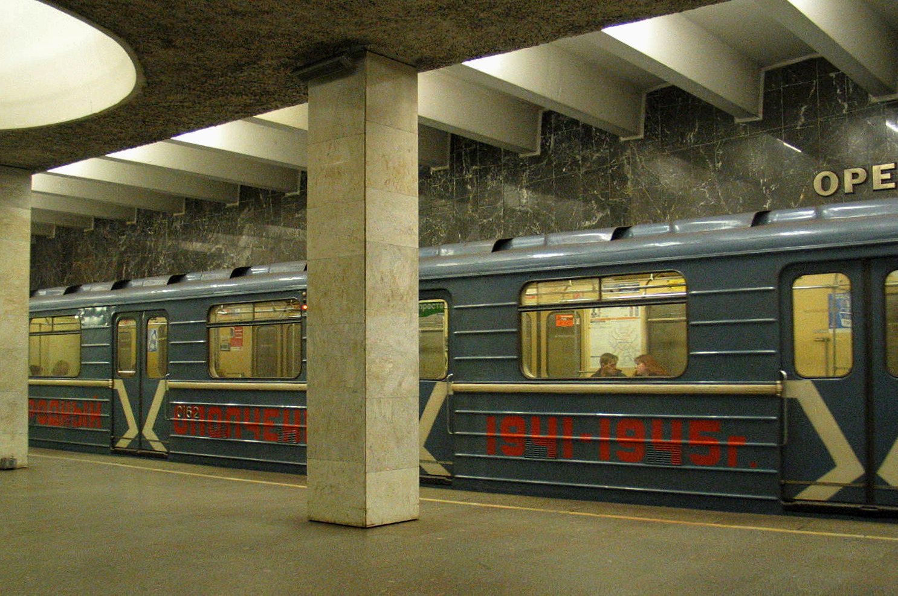
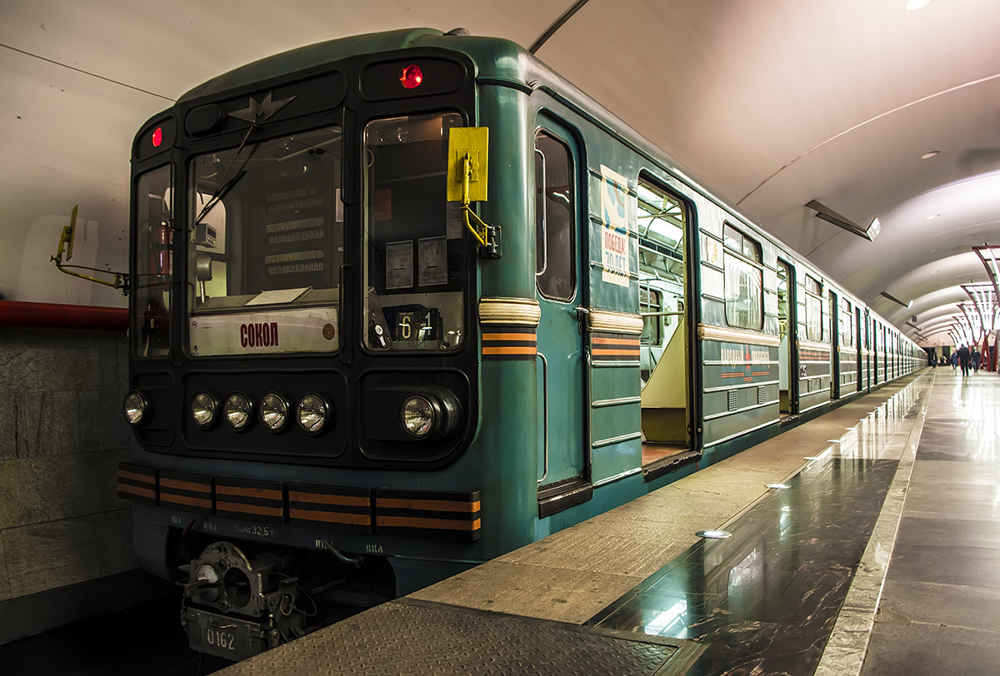
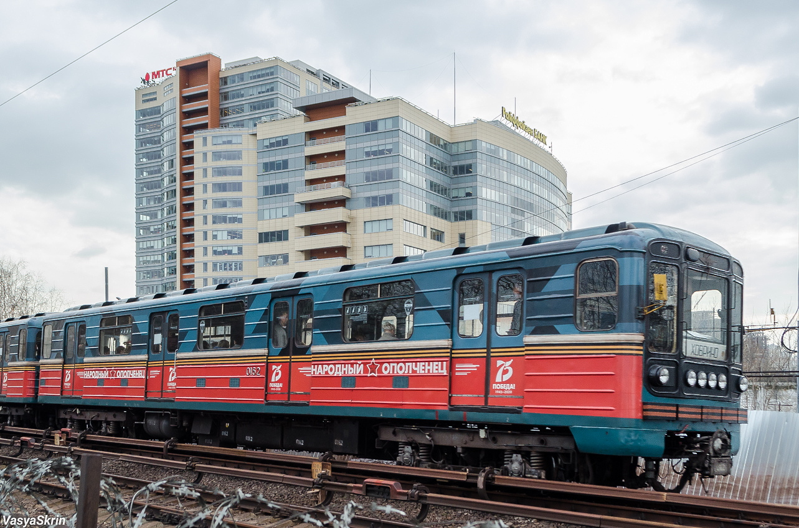

Народный ополченец
«Народный ополченец» — старейший именной поезд Мосметро. Он ходил в тематическом оформлении с января 1989 года и закончил работу в 2023 году.
Этот состав считался уникальным: если обычно тематические поезда ходят около 6 месяцев, этот ходил в тематическом оформлении 34 года. Он прошёл через многое.
Общая информация
| Параметр | Значение |
|---|---|
| Город | Москва 🇷🇺 |
| Депо/Парк | ТЧ-2 «Сокол» |
| Модель | 81-717.5 (MM3/MBM) / 81-714.5 (MM3/MBM) |
| Построен | 11.1988 |
| Начало работы | 12.1988 |
| Отставлен | 02.2023 |
| Списан | ≤ 11.2023 |
| Утилизирован | 2024 |
| Примечание | «Народный Ополченец» |
| Особенность | Старейший тематический поезд в Московском метрополитене |
Формирование состава
0161 — 0534 — 0535 — 0536 — 0537 — 0538 — 0539 — 0162
Тематическое брендирование
С 01.1989: «Народный Ополченец»
Экспозиции поезда
У поезда было 4 экспозиции за время его работы:
«Ветеранам ВОВ, работающим в метро»
Первая экспозиция, посвящённая ветеранам Великой Отечественной войны, работавшим в метрополитене.
«Битва под Москвой»
Экспозиция, посвящённая битве под Москвой.
«70 лет Победы»
Экспозиция к 70-летию Победы в Великой Отечественной войне.
«75 лет Победы»
Последняя экспозиция, посвящённая 75-летию Победы.
Экстерьер и интерьер
🎨 Окрас
- Бирюзового цвета с белыми полосами по борту
- Три ребра жёсткости
- Расположение сигнальных ламп: вертикальное
- Компоновка фар:
- 11.1988 — 2000-е: 2-2-2
- С 2000-х: 1-4-1
🪑 Интерьер
- Вертикальные поручни
- Диваны, обшитые кожзаменителем
- Пластик:
- 11.1988 — 2000-е: бежевого цвета под дерево
- С 2000-х: белого цвета
- Освещение: лампы типа ЛПВ-01
Особенности
Старейший тематический поезд в Московском метрополитене. Если обычно тематические поезда ходят около 6 месяцев, этот ходил в тематическом оформлении 34 года.
🏆 Рекорд
34 года в тематическом оформлении — абсолютный рекорд для Мосметро.
🚇 Последний выход
В последний раз выходил частично перемешанный с другими вагонами, после чего зашёл в депо и в пассажирскую эксплуатацию так и не вернулся.
🏛️ Сохранение
В 2024 последние вагоны перегнали в Митино. 0161 и 0162 ещё не утилизированы, их можно увидеть на экскурсии в депо ТЧ-16.
📅 История
С января 1989 года по 2023 год — более трёх десятилетий в тематическом оформлении.
Фотогалерея

📸 Мистер Гуй

📸 I K

📸 frunzenecc
Нажмите на фото для увеличения
«Народный ополченец» — это не просто поезд. Это память о ветеранах, символ эпохи и рекордсмен по длительности тематического оформления в истории Московского метрополитена».